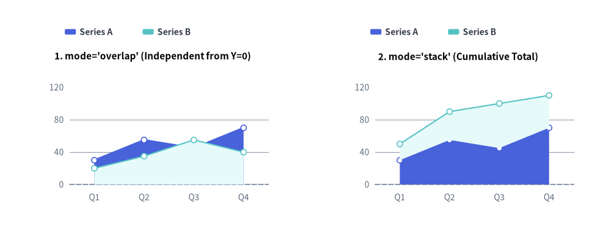
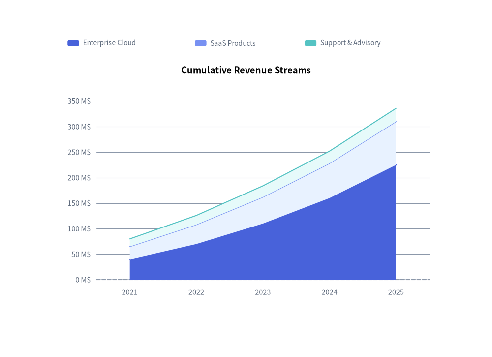
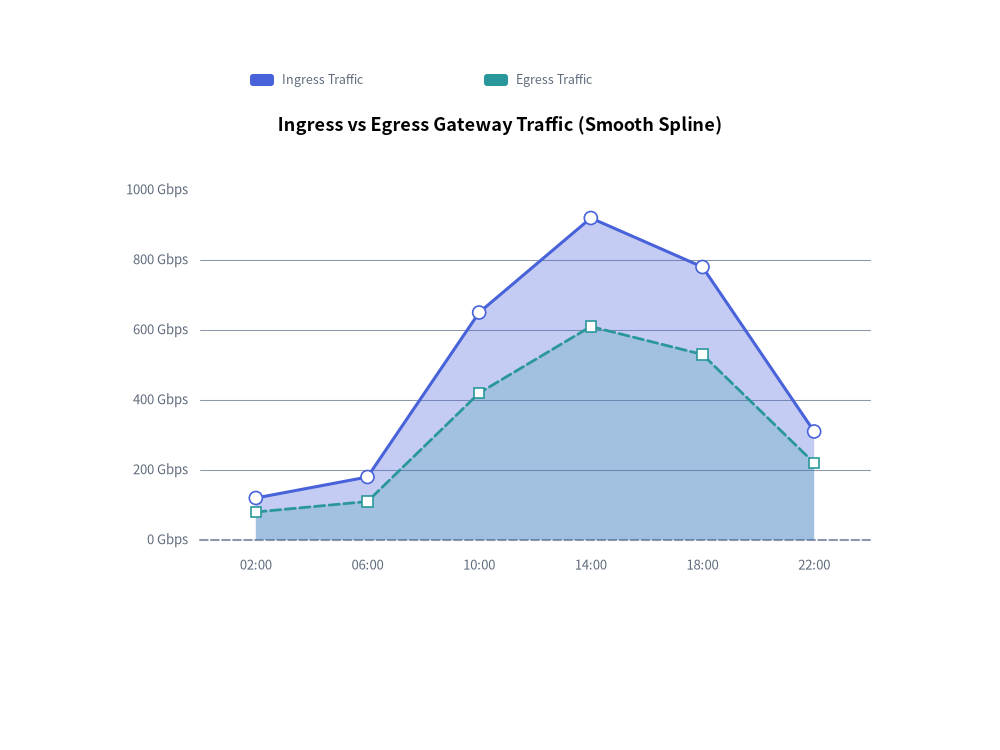

AreaChart: Overlapping & Stacked Quantitative Volumes
AreaChart (drawlib.charts.area) visualizes cumulative volumes, capacity distributions, and continuous trends over categorical intervals or time periods. By filling the geometric area between data series contours and the baseline ($Y=0$), it highlights both the total volume and individual series contributions.
1. Overview & Key Modes

Source Code
from drawlib.canvas import save, setup
from drawlib.charts.area import AreaChart
from drawlib.styles import Styles
setup(width=132, height=52)
categories = ["Q1", "Q2", "Q3", "Q4"]
series_a = [30.0, 55.0, 45.0, 70.0]
series_b = [20.0, 35.0, 55.0, 40.0]
# Left: mode="overlap" (Independent from Y=0)
overlap_chart = AreaChart(
axis_line_style=Styles.MutedDashed,
categories=categories,
axis_text_style=Styles.Muted.patch(text_size=10.0),
grid_style=Styles.MutedThin,
width=56.0,
height=36.0,
title="1. mode='overlap' (Independent from Y=0)",
title_style=Styles.BlackBold.patch(text_size=11.0),
mode="overlap",
fill_alpha=0.35,
show_points=True,
point_shape="circle",
point_size=0.6,
)
overlap_chart.add_series("Series A", series_a, style=Styles.PrimaryFlat)
overlap_chart.add_series("Series B", series_b, style=Styles.SecondaryNeutral, line_style="dashed")
overlap_chart.configure_y_axis(min_value=0, max_value=120, tick_step=40)
overlap_chart.draw(xy=(5.0, 6.0))
overlap_chart.draw_legend(xy=(14.0, 45.0), text_style=Styles.DarkBold.patch(text_size=10.0), orientation="horizontal")
# Right: mode="stack" (Cumulative Total)
stack_chart = AreaChart(
axis_line_style=Styles.MutedDashed,
categories=categories,
axis_text_style=Styles.Muted.patch(text_size=10.0),
grid_style=Styles.MutedThin,
width=56.0,
height=36.0,
title="2. mode='stack' (Cumulative Total)",
title_style=Styles.BlackBold.patch(text_size=11.0),
mode="stack",
fill_alpha=0.65,
show_points=True,
point_shape="circle",
point_size=0.6,
)
stack_chart.add_series("Series A", series_a, style=Styles.PrimaryFlat)
stack_chart.add_series("Series B", series_b, style=Styles.SecondaryNeutral)
stack_chart.configure_y_axis(min_value=0, max_value=120, tick_step=40)
stack_chart.draw(xy=(71.0, 6.0))
stack_chart.draw_legend(xy=(80.0, 45.0), text_style=Styles.DarkBold.patch(text_size=10.0), orientation="horizontal")
save()
Area charts support two core operational modes:
mode="overlap"(default): Each series polygon starts at the baseline ($Y=0$) and overlaps with preceding series. Use a semi-transparent opacity (fill_alpha=0.25to0.45) or per-seriesfill_alphaoverrides so underlying curves remain clearly visible.mode="stack": Each series rests directly on top of the preceding one, showing cumulative totals (e.g., total gross revenue broken down by product line).
2. Cumulative Stacked Area Chart
Stacked area charts (mode="stack") are ideal for displaying aggregate metrics and showing the proportional contribution of each stream over time:
from drawlib.canvas import save, setup
from drawlib.charts.area import AreaChart
from drawlib.styles import Styles
setup(width=102, height=74)
chart = AreaChart(
axis_line_style=Styles.MutedDashed,
categories=["2021", "2022", "2023", "2024", "2025"],
axis_text_style=Styles.Muted.patch(text_size=10.5),
grid_style=Styles.MutedThin,
width=82.0,
height=52.0,
title="Cumulative Revenue Streams",
title_style=Styles.BlackBold.patch(text_size=13.0),
mode="stack",
fill_alpha=0.65,
)
chart.add_series("Enterprise Cloud", [40.0, 70.0, 110.0, 160.0, 225.0], style=Styles.PrimaryFlat)
chart.add_series("SaaS Products", [25.0, 38.0, 52.0, 68.0, 85.0], style=Styles.PrimaryNeutral)
chart.add_series("Support & Advisory", [15.0, 18.0, 22.0, 24.0, 26.0], style=Styles.SecondaryNeutral)
chart.configure_y_axis(unit="M$", label="Gross Revenue (USD Millions)")
chart.draw(xy=(10.0, 10.0))
chart.draw_legend(xy=(14.0, 65.0), text_style=Styles.Muted.patch(text_size=10.0), orientation="horizontal")
save()

3. Smooth Overlapping Area Chart with Per-Series Alpha & Stroke Styles
When comparing independent metrics that share the same scale (such as network ingress and egress traffic), combine mode="overlap" and smooth=True with per-series fill_alpha, line_style, and vertex markers (show_points=True):
from drawlib.canvas import save, setup
from drawlib.charts.area import AreaChart
from drawlib.styles import Colors, Style, Styles
setup(width=102, height=72)
chart = AreaChart(
axis_line_style=Styles.MutedDashed,
categories=["02:00", "06:00", "10:00", "14:00", "18:00", "22:00"],
axis_text_style=Styles.Muted.patch(text_size=10.5),
grid_style=Styles.MutedThin,
width=82.0,
height=50.0,
title="Ingress vs Egress Gateway Traffic (Smooth Spline)",
title_style=Styles.BlackBold.patch(text_size=13.0),
mode="overlap",
fill_alpha=0.35,
smooth=True,
show_points=True,
point_shape="circle",
point_size=0.65,
)
chart.add_series(
"Ingress Traffic",
[120.0, 180.0, 650.0, 920.0, 780.0, 310.0],
style=Style(line_color=Colors.Primary),
fill_alpha=0.32,
line_width=2.2,
)
chart.add_series(
"Egress Traffic",
[80.0, 110.0, 420.0, 610.0, 530.0, 220.0],
style=Style(line_color=Colors.Secondary),
fill_alpha=0.22,
line_width=2.0,
line_style="dashed",
point_shape="square",
)
chart.configure_y_axis(unit="Gbps", label="Throughput (Gbps)")
chart.draw(xy=(10.0, 10.0))
chart.draw_legend(xy=(24.0, 63.0), text_style=Styles.Muted.patch(text_size=10.5), orientation="horizontal")
save()

4. API Reference
Constructor (AreaChart)
All constructor arguments are keyword-only (*):
from drawlib.charts.area import AreaChart, Axis, DrawDirection, FormatterType, Mode, Series
chart = AreaChart(
*,
axis_line_style: Style,
categories: list[str],
width: float = 80.0,
height: float = 50.0,
mode: Mode = "overlap",
fill_alpha: float = 0.35,
show_points: bool = False,
point_shape: PointShape = "none",
point_size: float = 1.0,
smooth: bool = False,
axis_text_style: Style | None = None,
grid_style: Style | None = None,
value_text_style: Style | None = None,
background_style: Style | None = None,
title: str = "",
title_style: Style | None = None,
)
| Parameter | Type | Default | Description |
|---|---|---|---|
axis_line_style |
Style |
Required | Mandatory style anchor for the coordinate baseline stroke. |
categories |
list[str] |
Required | Ordered category labels along the horizontal X-axis. |
width / height |
float |
80.0 / 50.0 |
Total bounding box dimensions of the chart in canvas units. |
mode |
"overlap" | "stack" |
"overlap" |
Area polygon composition mode (Mode). |
fill_alpha |
float |
0.35 |
Default transparency opacity for area fill polygons (0.0 to 1.0). |
show_points |
bool |
False |
Whether to render markers along the upper boundary contour. |
point_shape |
"circle" | "square" | "none" |
"none" |
Default marker shape at data vertices when show_points=True. |
point_size |
float |
1.0 |
Default marker radius (or half-width for squares) in canvas units. |
smooth |
bool |
False |
When True, interpolates smooth curved top contours and filled polygons. |
axis_text_style |
Style | None |
None |
Style for Y-axis tick labels and X-axis category names. If None, labels are omitted. |
grid_style |
Style | None |
None |
Style for horizontal Y-axis gridlines. If None, gridlines are omitted. |
value_text_style |
Style | None |
None |
Style for numeric labels drawn above vertex markers (when show_points=True and point_shape != "none"). |
background_style |
Style | None |
None |
Style for the outer chart background card. If None, card is omitted. |
title |
str |
"" |
Chart title text rendered at the top of the container. |
title_style |
Style | None |
None |
Typography style for title. Required for the title to render. |
Methods & Properties
add_series(name: str, values: list[float], style: Style, fill_alpha: float | None = None, line_width: float = 2.0, line_style: LineStyle = "solid", point_shape: PointShape | None = None, point_size: float | None = None, legend_text_style: Style | None = None, *, show: bool = True, draw_ratio: float = 1.0, draw_direction: DrawDirection = "left_to_right") -> Series: Registers an area series and returns the mutableSeriesinstance.fill_alpha: Per-series polygon fill opacity override (inheritschart.fill_alphawhenNone).line_width/line_style: Controls the upper boundary contour stroke ("solid","dashed","dotted","dashdot").point_shape/point_size: Per-series vertex marker overrides ("circle","square","none").legend_text_style: Optional customStylefor this series label indraw_legend().show,draw_ratio,draw_direction: Lifecycle visibility and partial spatial rendering controls ("left_to_right"sweeps horizontally;"bottom_to_top"rises vertically from the baseline or lower stack boundary).
configure_y_axis(...) -> Axis/configure_x_axis(...) -> Axis: Configures the vertical value axis or horizontal category axis. See Axes, Scales & Legends.get_size() -> tuple[float, float]: Returns(width, height)of the chart container.draw(xy: tuple[float, float] = (0.0, 0.0), *, width: float | None = None, height: float | None = None, scale: float = 1.0) -> None: Renders the chart anchored at bottom-leftxy, with optional temporary size overrides and proportionalscale.draw_legend(xy: tuple[float, float], text_style: Style, orientation: Literal["vertical", "horizontal"] = "vertical", swatch_size: tuple[float, float] = (2.4, 1.2), item_gap: float = 4.0, *, scale: float = 1.0) -> None: Renders the decoupled series legend atxy.- Properties:
chart.series -> list[Series]: Returns a copy of registeredSeriesobjects.chart.x_axis -> Axis/chart.y_axis -> Axis: Direct access to the horizontal and verticalAxisinstances.